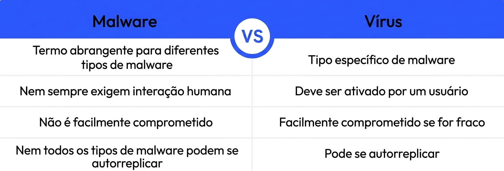

O que é um Malware?
Malware, também chamado de software malicioso, é um software projetado para infectar dispositivos e sistemas para fins maliciosos. Existem muitos tipos diferentes de malware por aí e cada um deles funciona de forma diferente. No entanto, todos os tipos de malware têm o objetivo comum de roubar, modificar e excluir dados.
O que é um vírus?
Um vírus é um tipo de malware que requer interação entre o host e o ser humano para poder infectar um dispositivo. Depois que um vírus infecta um dispositivo com sucesso, ele pode se replicar e se espalhar para outros programas e arquivos no computador infectado.
Afinal, qual é a diferença entre Malware e um vírus?
A diferença entre malware e vírus é que o malware é um termo genérico para qualquer software malicioso, enquanto o vírus é um tipo específico de malware que se auto-replica e se espalha para outros programas e arquivos. Todo vírus é um malware, mas nem todo malware é um vírus.

Envie seu Feedback